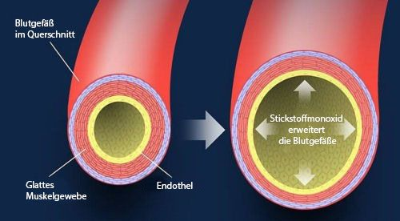
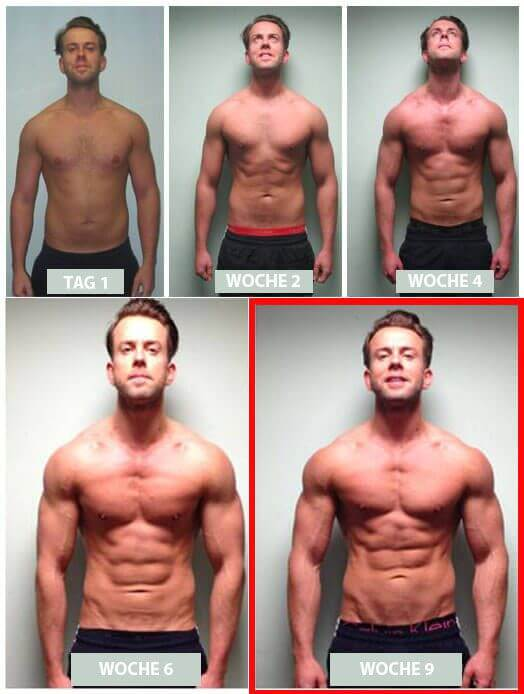
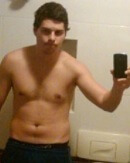
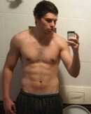
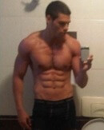

Neues "Legales Steroid" steigert Muskelwachstum um 287% - Top-Trainer und Athleten stellen der Öffentlichkeit die sicherste Steroidalternative vor!
(Muskelaufbau News) - Seit Anfang des Jahres sind unsere Leser verrückt nach einem neuen 'Legalen Steroid', das die Nation im Sturm erobert und Männern aus allen Lebensbereichen hilft, ihren Körper schnell und sicher zu verändern - ein Produkt, das so erfolgreich ist, dass viele Trainer und Profisportler es nun verboten sehen wollen.
Sie werfen dem Produkt vor, dass es beim Menschen zu schnell zu Muskelzuwachs und besserer Definition von Muskeln führt und zu schnell Muskelmasse aufbaut, und deswegen reglementiert werden sollte, obwohl es klinisch als unbedenklich eingestuft ist und keine jener gefährlichen Nebenwirkungen aufweist, die echte Steroide haben.
Männer im ganzen Land verwenden diese Steroidalternative, um in einem einzigen Monat über 6 kg Muskelmasse zu gewinnen!
Seit die Produkte vor Kurzem im Fernsehen vorgestellt wurden, erhalten wir täglich Tausende E-Mails von unseren Lesern, in denen sie uns um weitere Informationen bitten und uns fragen, wie sie diese neue muskelaufbauende Nahrungsergänzung in die Finger bekommen können. Überraschenderweise haben viele Männer, die täglich mit ihrem Körper kämpfen, noch nichts von dieser leistungsstarken Alternative gehört.
Trainer nennen dieses neue Ergänzungspräparat "die natürliche Steroidalternative", mit der Sie Muskeln aufbauen und Ihren Sexualtrieb steigern können.
In vertraulichen Interviews mit HR365 versicherten Hollywood-Filmstars, dass das Produkt ihnen geholfen hat, bei der Vorbereitung auf ihre Filmrollen Muskeln aufzubauen und schlanke, wohldefinierte Muskeln zu bekommen. Dutzende andere Berühmtheiten haben alle ihren Körper mit dieser heiß diskutierten Formel verändert. Sogar Profisportler vertrauen auf die muskelaufbauende Wirkung und haben genau dieses Produkt verwendet, um einige drastische Veränderungen an ihrem Körper vorzunehmen.
Das Produkt, über das wir hier sprechen, heißt Strong Menox. Vielleicht haben Sie es in den Nachrichten, im Fernsehen oder im Internet als den sicheren und wirkungsvollen "Geheimtrick für mehr Muskeln" gesehen, der von männlichen Models, Prominenten und normalen Menschen in ganz Deutschland benutzt wird. Der Hauptbestandteil ist Zinkcitrat, eine seltene Verbindung, die der Körper zum schnellen Muskelaufbau verwendet. Zinkcitrat wandelt sich in Stickstoffmonoxid um, das die Vasodilatation Ihrer Blutgefäße bewirkt. Mit anderen Worten, es erhöht drastisch die Menge an Nährstoffen, die zu Ihren Muskeln geschickt werden können. Der hohe Gehalt an Zinkzitrat und andere muskelaufbauende Eigenschaften von Strong Menox machen es zu einem leistungsstarken Helfer bei der Veränderung Ihres Körpers.
Die seltene Zinkcitratverbindung wandelt sich in Stickstoffmonoxid um und erweitert Ihre Blutgefäße, sodass mehr Nährstoffe zu den Muskeln gelangen.
Strong Menox ist ausgesprochen effektiv, also verdient es auch einen Spezialbericht. Am wichtigsten ist aber vielleicht, dass Strong Menox NICHT verschreibungspflichtig ist.
In klinischen Tests konnte nachgewiesen werden, dass die Inhaltsstoffe von Strong Menox dabei helfen können, Muskeln aufzubauen, und das ganz ohne Diät oder Training.
Darf man den Ärzten, die an der klinischen Studie gearbeitet haben, glauben, funktioniert die Wirkstoffkombination auf vielerlei Arten: “Als Erstes erweitert es die Blutgefäße in den Muskeln…
Doch die zweite Wirkweise ist um einiges wichtiger, denn sie sorgt dafür, dass die natürliche Testosteronproduktion gesteigert wird, was dabei helfen kann, schlanke Muskelmasse aufzubauen. Man hat also einen erhöhten Testosteronspiegel im Blut, der dabei hilft, Muskeln schneller aufzubauen. Und die beiden Wirkungen unterstützen und potenzieren sich sozusagen gegenseitig, sodass man eine bessere Definition der Muskeln bekommt und gleichzeitig auch neue Muskeln aufbaut. Und das Ganze auf natürlicher Basis und ohne schädliche Nebenwirkungen.”
Eine Bloggerin aus Essen hat ihren Körper in nur neun Wochen mit der Hilfe von Strong Menox komplett verändert.
Wenn Sie dem Ganzen skeptisch gegenüber stehen, sind Sie nicht allein. Wir hier von HR365 haben im Laufe der letzten achtzehn Jahre sehr viele vielversprechende Produkte kommen und gehen sehen. Als wir erfahren haben, dass es „schon wieder“ ein neues Präparat zum Muskelaufbau gibt, waren wir auch nicht gerade aufgeregt. Und selbst nachdem ich mich durch Berge von wissenschaftlichen Studien gearbeitet hatte ... hatte ich zwar eine fundierte Meinung. Was mir aber immer noch fehlte, war der persönliche Beweis, dass Strong Menox wirklich etwas bringt. Also habe ich mich mit der Genehmigung meines Herausgebers dazu entschlossen, das Produkt selbst auszuprobieren. Denn welch besseren Beweis gäbe es, als die Wirksamkeit des Produktes im Eigenversuch zu bestätigen?
Wir wissen selbst, dass der Gedanke, Muskeln aufzubauen und eine gute Definition zu bekommen, oft eine unüberwindbare Herausforderung darstellt. Wir haben eine Vielzahl von verschiedenen Programmen zum Muskelaufbau getestet und in den meisten Fällen waren die Programme zu anspruchsvoll oder hielten nicht, was sie versprachen. Ein Grund dafür, warum viele Programme nicht funktionieren, ist der, dass sie im normalen Leben kaum umzusetzen sind, da sie viel zu restriktiv sind.
“Es ist einfach unglaublich. Ich kann immer noch nicht fassen, wie schnell sich Resultate eingestellt haben. Echte Resultate! Ungelogen sah ich bereits nach dem ersten Tag Veränderungen. Ich kann mich nicht genug dafür bedanken, dass ich endlich nicht mehr der Schmächtigste in meinem Team bin!”
Trotz unserer Vorbehalte über Strong Menox, trafen unzählige Erfolgsgeschichten über das Produkt in unserem Büro ein, in denen ganz normale Männer auf der ganzen Welt unglaubliche Veränderungen an ihrem Körper erzielt hatten, ohne drastische Änderungen an ihrem Lebensstil in Kauf nehmen zu müssen. Denn obwohl sie ihre Essgewohnheiten nicht veränderten, haben sie trotzdem Resultate gesehen.
In diesem Spezialbericht erkläre ich ganz genau, wie ich das Produkt getestet habe, und zeige Ihnen, welche erstaunlichen Resultate ich erzielen konnte. Heute lüftete ich das Geheimnis um das Produkt, das wir hier in der Zentrale von HR365 als “das vielleicht wirkungsvollste Produkt für Männer, um ihren Körper zu verändern, dass die Welt je gesehen hat” bezeichnen. Und ich werde aufzeigen, wie auch Sie einen schlankeren, muskulöseren Körper bekommen können, und zwar schnell und sicher und ohne auf illegale Drogen zurückgreifen zu müssen oder Tausende von Euro in Nahrungsergänzungsmittel zu investieren.
Strong Menox klinisch Bewiesene Wirkungsweisen:
- Der natürliche Testosterongehalt im Blut steigt um 140%
- Der Blutstrom zur Muskelmasse wird gefördert
- Die Proteinsynthese wird verstärkt
- Es wirkt gegen Aufgedunsenheit
Als Erstes ging ich auf die Strong Menoxs website und bestellte eine Einzelflasche des Produkts zum Testen.
Drei Tage nach der Bestellung kam sie an. (Und ich konnte die ganze Zeit auf der Hermes-Website meine Bestellung verfolgen.)
Der Vorrat reichte für einen Monat, was für meine Zwecke perfekt war, denn ich wollte dieses Nahrungsergänzungsmittel vier Wochen lang testen und während dessen meine Fortschritte dokumentieren.
Und meine Resultate schockierten jeden hier bei HR365 (Mich selbst eingeschlossen)…
Woche eins:
Nach der ersten Woche mit dem neuen Präparat war ich überrascht davon, wie schnell und dramatisch die Veränderungen vonstattengingen. Ich war voller Energie und auch nicht so hungrig wie sonst. Ein schöner Nebeneffekt von Strong Menox ist seine Fähigkeit, den Appetit zu dämpfen. Ich fühlte mich wirklich fantastisch, und das Beste daran war, dass ich überhaupt nichts an meinem Tagesablauf ändern musste.
Am siebten Tag stieg ich auf die Waage (und zwar meine neue digitale Waage, die auch die Muskelzusammensetzung und den Körperfettanteil misst) und traute meinen Augen nicht – ich hatte 1,5 kg Muskelmasse zugelegt. Trotzdem war ich noch immer nicht vollständig überzeugt. Schließlich hört man überall, dass man am Anfang von Programmen zum Aufbau von Muskeln oft einfach nur Wasser verliert und gleichzeitig besonders für Muskeln aufbaut. Ich wollte herausfinden, ob ich auch in den kommenden Wochen noch so viel Muskeln aufbauen konnte. Aber ich muss schon sagen, die Dinge sahen gut aus! Ich wog jetzt unter 76 Kilos, ein Gewicht, das ich seit Jahren nicht mehr hatte!
Woche Zwei:
Nachdem ich das Nahrungsergänzungsmittel für zwei Wochen genommen hatte, war ich so energiegeladen wie nie zuvor und schlief fantastisch. Ich wachte nicht mehr mitten in der Nacht auf oder warf mich im Schlaf unruhig hin und her, denn mein Körper war nun endlich in der Lage, sich vollständig zu entspannen (Ich nehme an, dass das an der Detox-Wirkung des Produktes liegt). Ich habe auch noch weiter abgenommen und meine Muskeln besser definiert, sodass sich nun unglaubliche 70 kg wog – und das in nur zwei Wochen. So langsam konnte man schon einen Waschbrettbauch erkennen, von dem meine Freundin begeistert war. Ein großartiger Nebeneffekt!
So langsam fing ich an, dieses Produkt zum Muskelaufbau ernst zu nehmen, und als mehr zu betrachten als nur eine Spielerei.
Woche Drei:
Nach der dritten Woche waren all meine Zweifel und Bedenken wie weggeblasen! Ich hatte fast sechs Kilo an reiner Muskelmasse gewonnen und zusätzlich sehr viel Gewicht verloren. Die Schwimmringe um meinen Bauch waren komplett verschwunden. Man konnte die Muskeln an meinem Bauch sehen und ich hatte tatsächlich einen Waschbrettbauch! Das Produkt ist fantastisch. Und mein Muskelzuwachs war UNGLAUBLICH.
Außerdem hatte ich eine Menge Energie. Normalerweise ist bei mir in der dritten Woche bei Diäten und Trainingsplänen die Luft raus. Doch mit Strong Menox war das nicht der Fall. Stattdessen hatte ich den ganzen Tag über Energie! Außerdem ist mir aufgefallen, dass mein Körper das Essen jetzt anscheinend besser verdauen kann, denn ich habe keine Probleme mehr mit Blähungen oder Flatulenz nach dem Essen.
Woche Vier:
Nach der vierten Woche war ich wirklich schockiert, was die Endresultate anging. Seit ich angefangen hatte, Strong Menox zu nehmen, hatte ich einen Muskelzuwachs von ganzen sieben Kilo! Jetzt wollen natürlich alle hier bei HR365 das Produkt ausprobieren. Und ich war bestens vorbereitet und voller Selbstvertrauen, um bei dem Fitness-Wettkampf anzutreten. Und ich werde auch weiterhin Strong Menoxnehmen, da es gleichbleibend fantastische Resultate liefert und über so viele verschiedene Faktoren verfügt, die nicht nur beim Muskelaufbau helfen, sondern auch beim Muskelgedächtnis und der Erhaltung der Muskelmasse.
“Ich könnte mit dem Ergebnis nicht glücklicher sein. Ich habe in nur vier Wochen sieben Kilo Muskelmasse aufgebaut. Und das ohne besondere Diät oder intensives Training!”
Falls Sie immer noch Zweifel daran haben, dass Strong Menox sie tatsächlich beim Muskelaufbau unterstützen kann, sollten Sie es unbedingt einmal selbst ausprobieren. Dank des Tests, den ich am eigenen Körper gemacht habe, können Sie ersehen, dass die Resultate echt sind. Ich habe sieben Kilo Muskelmasse zugenommen und das in nur vier Wochen. Ganz ohne Diät oder Training. Auch mein dicker Bauch es jetzt weg und ich habe mittlerweile tagsüber auch keinen Heißhunger mehr. Ich und das Team von HR365 hatten zwar anfangs Bedenken, ob das Produkt auch wirklich funktionieren würde, doch mittlerweile sind wir davon überzeugt! Wir konnten in unseren eigenen Recherchen auch feststellen, dass Männer auf der ganzen Welt durch die Verwendung dieses revolutionären, neuen Produktes zum Aufbau von Muskelmasse Erfolge erzielen.
Wichtig: *In klinischen Studien wurde heraus gefunden, dass man Strong Menox täglich einnehmen sollte, um ähnliche Erfolge zu erzielen.
Strong Menox würde gerne all unseren Lesern die Möglichkeit geben, dieses neue Produkt auszuprobieren. Deswegen gibt es das Produkt jetzt vorübergehend im Sonderangebot! Allerdings sollten Sie sich beeilen, denn das Angebot endet am . Wenn Sie Ihre Flasche erhalten haben, teilen Sie uns doch in den Kommentaren am Ende dieses Artikels mit, welche Erfahrungen Sie damit gemacht haben!

Meine Freunde und ich haben darauf gewartet, dass der Strong Menox Builder endlich in die Nachrichten kommt. Wenigstens fünf von uns haben das Nahrungsergänzungsmittel ausprobiert und sind jetzt ausgesprochen muskulös. Das Zeug ist unglaublich und hat uns allen dabei geholfen, unsere Leben zu verändern. Ich wünsche allen viel Glück, die diese wundervolle Möglichkeit ausnutzen möchten.
Das hört sich wirklich toll an. Danke, dass du deine Erfahrung mit uns geteilt hast, jetzt habe ich das Gefühl, dass ich es auch ausprobieren sollte!
Bryan, ich habe das Produkt im Fernsehen gesehen, wusste aber nicht genau, ob ich es bestellen sollte. Allerdings wusste ich nicht, wie ich es bestellen konnte, bis ich dann über deine Seite gestolpert bin und das Angebot gefunden habe, bestimmte Nahrungsergänzungsmittel kostenlos auszuprobieren. Das finde ich großartig, weil ich kein Geld für Dinge ausgeben möchte, von denen ich hinterher feststelle, dass sie nicht funktionieren. Ich nehme das Nahrungsergänzungsmittel mittlerweile seit zwei Monaten und ich muss schon sagen ... Das Zeug funktioniert wirklich und meine Resultate sind kaum zu fassen. Vielen Dank dafür, dass du einen Selbstversuch unternommen und dann diesen Artikel geschrieben hast. Vielen Dank, für all die tollen Informationen, Mann!
Ich verschiebe es mittlerweile schon seit mehr als zwei Monaten, mich endlich wieder um meine Figur zu kümmern, doch heute ist der Tag, an dem ich mich zusammenreißen werde und endlich anfange. Ich habe schon mal die Probepackung bestellt und werde jetzt eine halbe Stunde lang trainieren! Vielen Dank HR365! Ihr habt mich so motiviert, dass ich jetzt endlich doch angefangen habe!
Meine Frau und ich müssen beide abnehmen und wieder fit werden und außerdem möchte ich wirklich Muskeln aufbauen, weil wir ein Familientreffen haben, wo ein paar Leute dabei sind, die wir seit über zehn Jahren nicht mehr gesehen haben. Wir haben das Produkt bestellt und werden es beide ausprobieren, vielen Dank. Familie Baar.
Hey, ich habe einen Bericht im Fernsehen gesehen und festgestellt, dass Strong Menox BEI MÄNNERN SOGAR NOCH BESSER FUNKTIONIERT, vor allem, wenn sie ihre Muskeln definieren möchten!!! Ich werde auf jeden Fall das Testangebot bestellen, bevor es vorbei ist! Vielen Dank für all die Tipps. Ich bin wirklich aufgeregt!
Im Moment hört man ja überall von Strong Menox. Bei mir im Supermarkt gab es jetzt sogar Gratisproben und das Zeug schmeckt wirklich toll als Getränk. Ich habe zwei Kisten davon gekauft und jetzt werde ich das neue Nahrungsergänzungsmittel ausprobieren. Vielen Dank für all die Links!
Mein Bruder hat schon Probleme mit seinem Körper, seit er klein ist, und der Arzt hat meinen Eltern empfohlen, dafür zu sorgen, dass er anfängt, abzunehmen. Ich hoffe wirklich, das ist die Antwort auf all unsere Probleme. Vielen Dank HR365
Wie wirksam ist das Zeug, Jungs? Ich würde wirklich gern besser aussehen, wenn ich mein T-Shirt nicht anhabe! Ich habe allerdings schon bestellt
Ohne Witz, ich benutze die beiden Produkte jetzt schon seit zwei Monaten und die Resultate sind unglaublich. Und obwohl ich mich nicht besonders strikt an meine Diät halte, sehen meine Muskeln besser aus. Ich würde jedem empfehlen, es auch auszuprobieren.
Danke! Ich werde es jetzt auch mal ausprobieren, denn mit dem Sonderangebot, dass da im Moment läuft, hat man wirklich nichts zu verlieren.
Ich bin wirklich froh darüber, dass ihr Erkundigungen über die Hersteller dieser Produkte eingeholt habt, denn viele dieser Produkte wirken nicht und sind reine Geldverschwendung. Ich habe jetzt genau die Marken bestellt, die ihr in diesem Artikel empfehlt und kann es kaum erwarten, sie auszuprobieren.
Ich habe jetzt Strong Menox als Combo auch fast überall gesehen. Und vor ein paar Tagen hat mir sogar mein bester Freund über dieses Nahrungsergänzungsmittel zum Muskelaufbau erzählt, weil einer seiner Freunde in den ersten fünfzehn Tagen damit ungefähr sechs Kilo Muskelmasse zugelegt hat. Muss ich unbedingt auch ausprobieren! Danke.
Ich freue mich wirklich! Endlich mal ein Produkt, dem man optimistisch gegenübertreten kann. Ich habe es bestellt und werde Bericht erstatten!
Das Zeug ist unglaublich! Und mein bester Freund James hat das gleiche Paket bestellt und voll viel Gewicht verloren und sieht jetzt echt super aus ... Da ich es nicht fassen konnte, habe ich beschlossen, selbst mal nachzuforschen, und so bin ich über diesen Artikel gestolpert. Wahnsinn, dass sie jetzt sogar ein Testpaket anbieten! Ich weiß, dass James ungefähr €300 ausgegeben hat, und gesagt hat, dass es das voll wert gewesen sei ... Stellt euch mal vor, wie sehr er sich gefreut hätte, wenn er das Ganze für nur €4 hätte haben können. Nicht zu fassen, vielen Dank, mein Freund!!
Das hört sich ja ziemlich leicht an, und da ich ohnehin schon trainiere, kann ein bisschen Nachhilfe nicht schaden. Dies ist die perfekte Gelegenheit, es einmal auszuprobieren.
Ein Freund von mir nimmt Strong Menox und hat es mir vor drei Wochen empfohlen. Ich habe die Produkte bestellt und sie innerhalb von drei Tagen erhalten (obwohl ich nicht den Express Versand gewählt habe). Und bis jetzt sind die Resultate unglaublich! Ich kann es kaum abwarten, wie ich in Woche drei und vier aussehe.
So wie es aussieht, funktionieren die Links zu den Gratisproben noch immer! Holt sie euch, solange ihr noch könnt.
Ich bin hundert Prozent von diesem Paket überzeugt. Ich habe diese Diät vor einem Monat ausprobiert und bin begeistert. Die Produkte haben mir geholfen, acht Kilo Muskelzuwachs zu bekommen und mein Leben komplett zu verändern. (Vorher war ich immer voll der Spargel-Tarzan). Ich würde diese Diät wirklich JEDEM empfehlen, der vorhat, möglichst SCHNELL Muskeln aufzubauen.
Ich habe vor ein paar Wochen das zeitlich begrenzte Sonderangebot bestellt und muss schon sagen, dass der Kundenservice fantastisch ist. Ich werde die Produkte weiterhin kaufen ... Ach, und ja, es stimmt, mit dem Produkt funktioniert der Muskelaufbau problemlos! :)
Danke an Bryan und das Team von HR365 für diesen Bericht über ein Produkt zum Muskelaufbau. Ich habe die Werbung dafür überall gesehen und hatte bis jetzt einfach nicht den Mut, es auszuprobieren. Danke.